Reviewed 6 October 2026 · Live competitor + production public flow + current working-tree source
Resumatic sells the workflow better. Latexy has more depth than its website reveals.
The largest demonstrated gap is public product communication, acquisition content, and first-use clarity. It is not a general absence of features. Preserve the source-control, review, and developer advantages; make them understandable before expanding the feature list.
I use Latexy for the product because that is the name in the current code and public UI. The user referred to it as Latexian. Branding consistency across future marketing, domains, documentation, and community posts needs an explicit decision.
What this audit can establish
Observed means a page or behavior was inspected in this run. Code-backed means implementation and wiring exist, without claiming all integrations passed a live test. Claimed means the vendor advertises it. Not found means no evidence in the inspected surfaces; it is not proof of universal absence.
Browser review covered Resumatic’s homepage, pricing, checker, templates, examples, signup, blog, and an authored article. Interactions included template filtering, example search, scrolling, and CTA navigation. Latexy’s local homepage was captured; production anonymous studio was opened and its supplied sample successfully compiled to a one-page PDF. Production pricing and resources were inspected. No private résumé was uploaded, no account was created, no job application was submitted, and no paid checkout was exercised.
Source review inventoried the 44 App Router pages and performed targeted reads of marketing components, trial and entitlement logic, core scoring and matching services, AI assistant, interview simulation, import/export, application adapters, templates, collaboration wiring, and TUI/MCP source. The working-tree base was 1cb54c0b5d8f40b1f7773b7f2057084c166fd8d8; pre-existing local changes were present and were not changed by this audit. There are 61 source template files, including five Beamer files: 56 other résumé/CV templates. This is a source count, not a verified production catalog count.
Important limits: Resumatic’s authenticated product was behind signup, so its ranking accuracy, editor quality, exports, agent execution, and interview experience were not benchmarked. Latexy’s authenticated workflows were checked primarily in source. The local studio/backend timed out; production studio worked. The browser viewport override did not take effect (reported width stayed 1280), so mobile layouts remain unverified. There are no field Core Web Vitals, traffic, conversion, backlink, revenue, or AI-citation measurements here.
Business model and competitive position
Resumatic is freemium, rather than wholly free: one free résumé, three PDF downloads and limited AI; Pro is advertised at $29/month; Lifetime at $149 once. Its public pricing is immediately legible. Its app is hosted at resumatic.rezi.ai; the footer identifies Rezi Enterprise and discloses that metrics and ratings are aggregated with Rezi. Treat scale and ratings as shared ecosystem evidence, not Resumatic-only cohort evidence. Current pricing.
Latexy’s source defaults list Basic ₹299/month, Pro ₹599/month, and BYOK ₹199/month, with annual variants. These are configured defaults, not independently verified checkout prices; billing is undergoing local changes. The public pricing page displays no numeric prices or exact paid limits. This conceals a potentially strong affordability story and forces an extra decision before visitors can compare cost.
Resumatic’s broad promise is a job-search outcome. Latexy’s most defensible focused promise is precise résumé production with reviewable AI changes and portable source. Developers, technical applicants, researchers, and people who care about document control are a plausible initial segment. This positioning is a recommendation, not proven demand.
Feature comparison
| Capability | Resumatic evidence | Latexy evidence / implication |
|---|
| AI résumé writing and tailoring | Advertised with detailed examples | Code-backed optimization, bullets, summaries, rewriting, steering, personas, batch tailoring. Broad overlap. |
| Review / undo AI changes | Agent page promises reviewable edits | Per-change review and document assistant proposals. Important advantage in implementation depth, but not exclusive as a marketing claim. |
| Chat-based document editing | AI Resume Agent advertised | DocumentAssistantPanel + /ai/document-assistant, wired into authenticated editor. Do not label chat as missing. |
| Form-based creation | Builder advertised; actual form behind signup | Structured builder and WYSIWYG source exist. Anonymous entry still leads directly to LaTeX. |
| ATS quality score | 23 checks across five categories advertised | Quick scorer, full weighted scorer, deep AI analysis. A score and compiled PDF were observed publicly; category detail was absent in that flow. |
| Keyword / semantic match | Job match and targeting advertised | Keyword gaps plus OpenAI embeddings/cosine similarity. Not evidence of worse ranking. |
| Parser visibility | Checker claims per-platform extracted output | PDF extraction preflight and heuristic ATS profiles exist. Neither vendor’s claims establish actual employer-parser equivalence. |
| Templates | 9 public templates; tier filter worked | 61 source .tex files, 56 outside Beamer. Broader source catalog; production quantity not verified. |
| Role examples | 180+ advertised; public nurse search filtered to a matching card; cards lead to signup | Role-focused template content exists, but no equivalent public role-example content hub found. |
| Imports | PDF / DOCX / LinkedIn advertised | PDF, DOCX, Markdown, LaTeX; GitHub projects, URLs and LinkedIn export. Review source before promising universal import fidelity. |
| PDF / Word export | Both advertised without watermark | PDF observed; DOCX and other export routes code-backed. DOCX reconstructs content, so arbitrary LaTeX layout fidelity is not guaranteed. |
| Cover letters | Advertised on all pricing plans | Dedicated routes, worker, editor and saved library exist. Overlap. |
| Resignation letters | Explicitly in pricing and signup preview | No dedicated flow found. Low priority relative to acquisition and onboarding. |
| Human résumé review | Expert review advertised; allocation unclear across different public descriptions | No operational human review marketplace/service found. Genuine service gap, requires people and turnaround promises. |
| Interview practice | Audio/video-style replay, tone and pace shown in marketing | Question generation and text coach/mock simulation with feedback. Voice/video replay and speech analysis not found. |
| Job discovery | Search, ranked matches and saved/application states advertised | Saved jobs, alerts, tracking and URL scraping exist. No equivalent broad live job-discovery feed found in inspected UI/routes. |
| Application tracking | Advertised in product previews | Kanban, saved jobs, interviews, reminders, contacts and review-only email parsing code-backed. |
| Browser extension | Advertised | packages/browser-extension exists. Neither listing/install health was tested. |
| Mobile | Homepage links to Rezi App Store and Play Store apps | PWA and responsive editor implementation. No native app counterpart found; entitlement/account continuity of Rezi apps unverified. |
| ChatGPT-native app | Advertised in homepage demo | No equivalent public ChatGPT app found. Separate from local MCP support. |
| LaTeX and compiler tooling | No equivalent source workflow found | Monaco/CodeMirror, three compilers, SyncTeX, lint, logs, macros, package management, TikZ, bibliography. Strong specialist depth. |
| BYOK / provider selection | No public offer found | OpenAI, Anthropic, Gemini and OpenRouter code-backed. Distinct cost/control proposition. |
| Developer API / TUI / MCP | ChatGPT app claim, no comparable public local developer interface found | API keys, public API, TUI, eight MCP tools and resources. Real agent-facing surface in source. |
| Collaboration / teams | No comparable detailed public evidence found | Yjs, collaborators, comments, chat, team/workspace/recruiter and tenant source. Deployment maturity unverified. |
| Variants / history / merge | Multiple targeted versions advertised | Forks, parent diff, checkpoints, history, merge and batch tailoring. Showcase a concrete use case. |
| Academic and regional documents | Career-wide content; no equivalent specialized integration evidence found | Academic CVs, publications, DOI/arXiv/ORCID, Zotero/Mendeley, EuropeCV, Indic/CJK/RTL support, regional templates and Beamer. |
| Source portability / ownership | Editable Word/PDF advertised | MIT source license, self-hosting instructions, editable .tex, GitHub/Dropbox/Drive integration source. Integration runtime not verified. |
| Direct applications / portfolio | No counterpart found in reviewed public pages | Greenhouse/Lever submission adapters and portfolio/custom-domain routes exist. Employer acceptance and credentials were not tested. |
The practical missing set is therefore narrower than “most features”: a credible public content library, a broad job discovery experience, native/ChatGPT distribution, voice/video interview capability, human review operations, and possibly resignation letters. Only the first two are strong immediate candidates; decide the rest from demand and capacity.
Frontend: what they do better, and what we should keep
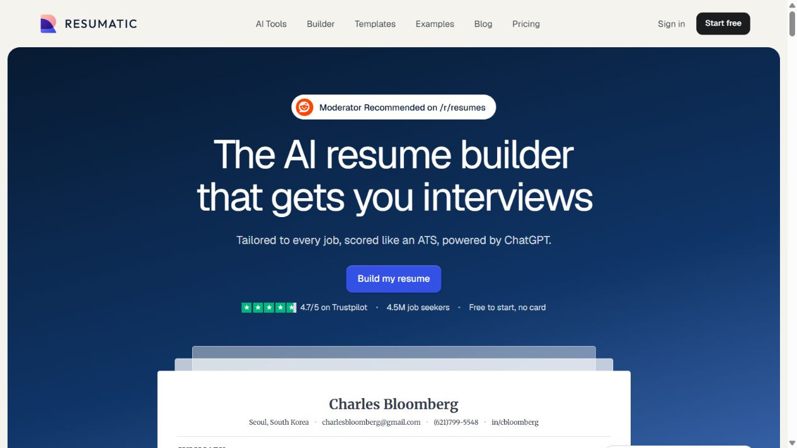
Step 1A · Resumatic homepage. Clear hierarchy and prominent social proof.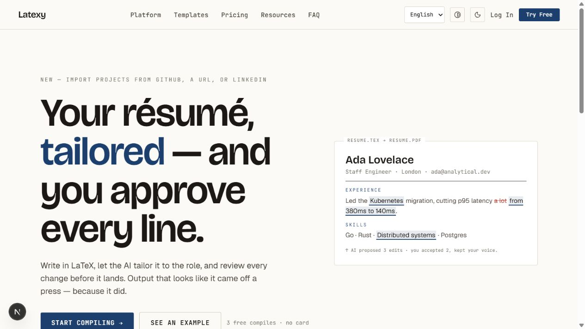
Step 1B · Latexy local homepage. Distinct typography and strong control message; CTA reaches the bottom of this viewport.Resumatic uses a consistent blue/cream palette, spacious type, framed résumé previews and recognizable product moments. Its demos show cause and effect: the input, a keyword gap, a rewrite, and an output. The landing page makes more of the product understandable before signup. Its marketing routes reuse the same visual language but address a specific visitor task. That coherence explains much of the appeal.
Latexy already has a distinctive visual foundation: Bricolage display type, Geist body, JetBrains Mono labels, semantic tokens, two aesthetics, theme/contrast controls and motion-aware styles. The weakness is that the landing specimen is static, secondary pages repeat broad claims, and specialist terminology appears before novices have seen a finished result. Copy such as “Start compiling,” “toolchain,” and “Run résumés like infrastructure” suits technical users but narrows the general audience.
Recommended adaptation: keep the brand typography and review-first identity. Add one short, controllable demonstration of a true edit, with original text, job requirement, proposed change, reason, accept/reject and resulting PDF. Do not invent a metric such as latency improvement to make a demo persuasive. Provide a finished sample before an empty preview, and let visitors choose import, guided builder or source editing.
Micro-interactions should explain state: show which requirement an edit addresses; preserve focus after accept/reject; give clear import stages; transition from processing to output; show how a template changes the document. A hover, counter or reveal alone does not establish better usability. Avoid adding a large animation library to every marketing page simply to imitate motion.
Concrete Latexy findings
- Pricing opacity — high priority. Live pricing omits prices and exact paid allowances. Pull public data from the same plan source as billing; show currency, interval, quota resets, and BYOK’s additional provider cost. Do not expose account data to render pricing.
- Misleading resource destinations — high priority. Source and public resources show Guides → /faq, Workflows → /platform, Templates → /try, Best Practices → /faq. These labels promise content the destination does not supply. Link to actual guides or accurately name the destination.
- Anonymous entry assumes LaTeX knowledge. The studio is functional and avoids login, but presents raw source, numerous controls and an empty PDF initially. Expose the existing guided path alongside it and show a finished sample. Keep source mode easy for existing users.
- PDF clipping — reproduced. After successful compilation the preview is horizontally clipped at default zoom; the Fit control is disabled in the observed state. Default to fitting the page to the pane and retain a user-selected zoom afterward.
- Score state is unclear — reproduced. The quick score remained 59; after compile the panel still said to compile or optimize for a category breakdown. Explain which score is available and render actionable quick-score details; only promise category data when the completed operation supplies it.
- Unsupported speed proof. The landing hardcodes “Sub-second” and a 0.8s example. This run did not measure end-to-end duration precisely. Remove or qualify the guarantee until warm/cold and queue latency are measured; distinguish rendering time from time to receive a PDF.
- Trial value is framed around internal work. “3 compiles” describes a meter, not a finished applicant outcome. Public compilation did decrement 3 → 2 correctly. Explain what visitors can accomplish within the trial, including whether errors and AI operations consume it.
- Implementation complexity can dilute polish. The authenticated editor contains over 4,000 nonblank lines. Many capabilities are nested in panels. This is a maintainability and discoverability risk, not proof of a bug. Extract coherent feature/state modules as they are changed, without a broad rewrite before acquisition fixes.
Resumatic issues we should not inherit
The checker’s main “free check” CTA led to signup while the page promised an initial score without signup. The upload route itself was not tested, so this establishes CTA friction, not the absence of a guest checker. Example and template cards also led to a generic signup destination, despite strong browsing promises. The template filter and nurse search worked, but the displayed 180+ corpus was not independently enumerated.
The checker and example pages showed horizontal document overflow at the default desktop viewport. Measured checker width was 1294 against innerWidth 1280. That is enough for a narrow layout finding, not a broad mobile verdict. The homepage’s Reddit quotes did not expose thread links in the observed DOM, making those specific testimonials hard to verify. The aggregate ratings disclosure should be closer to prominent claims.
Claims that every template works in every ATS, that AI never invents content, or that interview outcomes improve require validation beyond marketing. The template page itself ranks some layouts as riskier, making universal compatibility language particularly worth scrutinizing. Latexy should use precise extraction evidence and show uncertainty.
Accessibility and smoothness
Latexy exposes a skip link, labeled controls, high contrast and theme toggles, and reduced-motion handling in source. Resumatic’s observed controls include named tabs/buttons, labeled search, and a skip link on signup. These are positive signals, not WCAG certification. Small mono labels, pale secondary text, icon-only controls, focus behavior during animations, nested card/button/link semantics, and offscreen content need keyboard, screen-reader and contrast testing. Mobile and reduced-motion runtime behavior were not verified.
No measured performance winner can be declared. Production Latexy’s PDF flow worked; local development navigation/backend timed out. Development timing must not be compared with Resumatic production. Measure equivalent production pages and flows, mobile hardware/network profiles, LCP/INP/CLS, JS cost, import latency and click-to-PDF p50/p95 before using “smoothness” as a numerical claim.
SEO, GEO and AEO: meaningful evidence and limits
| Signal checked now | Resumatic | Latexy |
|---|
| Crawl files | robots.txt 200 and allows public crawling; sitemap.xml 200 | Production robots.txt and sitemap.xml both 404; no matching files found in current frontend |
| Sitemap breadth | 78 URLs; 58 articles; tools, comparisons, salaries, examples, templates | No comparable public intent/content route system found |
| Titles and canonicals | Page-specific titles and canonicals observed on homepage, blog and article | Root metadata is generic; pricing has a specific title but no observed canonical/OG tags |
| Social previews | Homepage Twitter/OG text tags; sampled article has an OG image | No comparable root OG/Twitter configuration found; live pricing had no OG tags |
| Structured data | Article JSON-LD observed with author, dates and publisher. None observed on sampled homepage/checker/blog | No relevant public structured-data implementation found in source scan or pricing DOM |
| Answer-ready content | Authored articles, question headings, takeaways, dates and topic FAQs | Generic FAQ/resources exist; deeper public explanations and methodology pages are missing |
| llms.txt | 404 | 404 |
| Page-native agent tools | No WebMCP tools returned on sampled blog document | Separate local MCP implementation exists; browser WebMCP not established |
These findings support a better discoverability foundation at Resumatic, not “amazing SEO” as a proven outcome. Search rankings, organic traffic, AI citations and content effectiveness remain unmeasured. A sitemap helps discovery but does not guarantee indexing; a missing robots file does not inherently block crawling. llms.txt absence does not prove poor AI visibility either.
The sampled article demonstrates an especially useful content pattern: a named author, qualifications, publication date, concrete examples, question-based headings, cited sources and a clear takeaway. Its Article schema helps describe the content. We did not verify every factual assertion in that article. Sample article.
For Latexy, first add canonical-domain metadata, meaningful route titles/descriptions, crawl files, public social preview images and truthful Organization/SoftwareApplication/Article/Breadcrumb schemas where appropriate. Keep authenticated workspaces, share tokens and personal portfolios out of a blanket sitemap. Then publish a small set of useful intent pages: LaTeX résumé builder, PDF text-extraction checker, reviewable AI tailoring, BYOK, and technical/academic templates. Give each page an actual example and a relevant product entry.
For answer engines, explain our score inputs, what parser preflight does, how AI edit approval works, how BYOK pricing works, what formats export, and where the limitations lie. Include concise answers near the relevant question, then deeper methodology and evidence. GEO/AEO work should improve clarity, provenance and usefulness; no special markup can guarantee recommendations by AI.
The “ranker”: separate three different products
If ranker means search-engine ranking, the evidence above is architectural, not a rank measurement. If it means job matching or résumé scoring, there is no defensible accuracy winner without identical inputs and judged outcomes. Resumatic demonstrates a persuasive score narrative; its backend was inaccessible.
Latexy has several distinct scoring systems: quick résumé checks, a full weighted quality score, deep LLM review, embedding similarity, a confidence score and cohort benchmarking. The full quality scorer starts with formatting 25%, structure 20%, content 25%, keywords 20% and readability 10%, then reweights for industry and applies locale conventions. The semantic matcher maps cosine similarity ×100 and separately identifies lexical gaps. Neither is a probability of an interview.
Quick scoring debounces for ten seconds in the frontend. The confidence service is rule-based. The benchmarking service compares the latest valid scored optimization per distinct résumé against a global cohort, with a minimum sample size of 50; it is not a recruiter-labeled outcome benchmark. ATS platform simulation uses source pattern rules and deliberately modeled distortions, rather than executing Workday/Greenhouse/Lever’s actual proprietary parsers.
What we are doing wrong: too many scores can appear authoritative without explaining their different purposes. Present three clear concepts: document extraction/readability, job requirement evidence, and writing quality. Keep semantic similarity as a supporting signal. Let each issue point to source text, explain its rule and show a factual correction.
Validation plan: build a consented/synthetic test corpus across engineering, healthcare, finance, career change, academic and regional cases. Test text extraction against known text; score invariance under paraphrase; keyword stuffing and irrelevant bullet resistance; must-have versus optional requirements; multi-column order; import/export preservation; and fabricated achievements. Compare paired outputs with blinded human judgments. A before/after score increase alone proves only that a draft moved toward the scorer’s preferences.
There is concrete Reddit distribution evidence. A September 2026 r/resumes thread includes an AutoModerator resource link identifying Resumatic as a vetted builder; an October 5 thread contains the same recurring resource. Older threads also contain it. That supports repeated community exposure, not traffic volume, impartiality, or the website’s specific testimonial quotations. Twitter/X traction was not substantiated by the focused search.
Latexy can build a credible community pitch around portable .tex, visible AI changes, parser evidence, GitHub project import, BYOK and working guest access. Publish a useful free template, an extraction demonstration, a fact-preserving rewrite example and a concise methodology before promotion. Seek moderator-approved resources through normal community participation; do not assume a polished page produces a standing recommendation.
For social distribution, a short real workflow clip is more legible than a crowded editor screenshot. Show a true source bullet, a job requirement, a proposed edit and a finished résumé. Link to a public route that reproduces the experience. Use genuine, permissioned testimonials with source links and disclose any incentives or affiliation.
What to change first
| Order | Work | Why / acceptance criteria |
|---|
| 1 · P0 | Public pricing and resource link correction | Visitors can compare actual prices, allowances and reset windows without login; every resource link delivers what its label promises. |
| 2 · P0 | Guest first success | Offer import / guided / LaTeX; display a sample PDF; fix fit-to-pane and stale score help. Validate one guest résumé from input to usable export. |
| 3 · P0 | Crawl and share basics | robots/sitemap/canonicals and OG previews verified on production; sensitive routes excluded. No placeholder speed or scale claims. |
| 4 · P1 | One compelling landing demonstration | Show an actual proposed edit with reason, acceptance and output. Keyboard accessible and useful with reduced motion. |
| 5 · P1 | Five focused acquisition pages + useful guides | Each answers an intent, includes evidence, links to a relevant tool/template, and has distinct metadata. Expand from actual query and conversion data. |
| 6 · P1 | Unify score explanations and validate matching | Users understand score type and can act on each issue; evaluation corpus catches stuffing, false matches and altered facts. |
| 7 · P1 | Community-ready proof and product analytics | Real demo, templates, reproducible parser examples; measure landing→input→first PDF→review→export→return visit. |
| 8 · P2 | Targeted product expansion | Investigate ranked job discovery, human review partners and native/ChatGPT distribution only after demand is established. Voice interviews and resignation letters are optional. |
A sensible sequencing assumption is to spend the next improvement cycle predominantly on the public funnel and first useful result, with scoring validation alongside it. The evidence does not justify starting with a visual clone, more templates, or a native app. An eventual redesign should preserve Latexy’s recognizable typography and factual review promise while adopting Resumatic’s demonstration discipline.
Track conversion by channel and entry page, completion time, import failure rate, compile failure rate, accepted-versus-rejected edits, export success and return use. Separate trial exhaustion from technical failure. Establish current baselines before promising a percentage lift.
Captured review steps and health
All screenshots below are from this audit. Local screenshot 03 is explicitly labeled; all other Latexy screenshots are production. The failed mobile override is excluded from mobile conclusions. Screenshot 10 is a transient animation frame and is not used to establish completed functionality.
- Homepage / positioning — mixed. Resumatic’s hierarchy and demo narrative are strong; Latexy’s control message and type are distinctive but specialist. See 01 and 03 above.
- Pricing — Resumatic clear, Latexy incomplete. Prices versus no prices. See 02 and 15.
- Checker / signup — mixed. Resumatic offers a strong upload affordance; the main CTA reached signup. Upload scoring was not performed. See 04 and 05.
- Templates / examples — working filters, gated next step. Tier filter and nurse search worked; cards led to signup. See 06 and 09.
- Latexy guest studio — functional, demanding. Raw source and empty preview precede first success. See 07.
- Compile / score — success with presentation defects. PDF compiled; page clipping and missing detail remained. See 08 and 13.
- Editorial content — strong Resumatic foundation. Public blog and authored article have a clear reading structure. See 12 and 14.
- Latexy resources — incomplete. Generic destinations do not deliver promised guides/workflows. See 16.
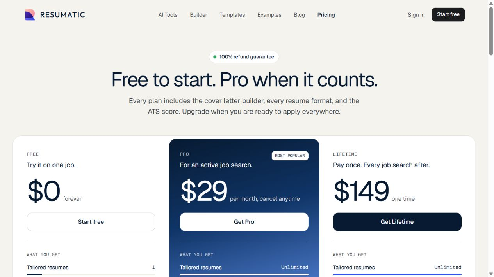
Step 2A · Visible $0, $29 monthly and $149 lifetime pricing.
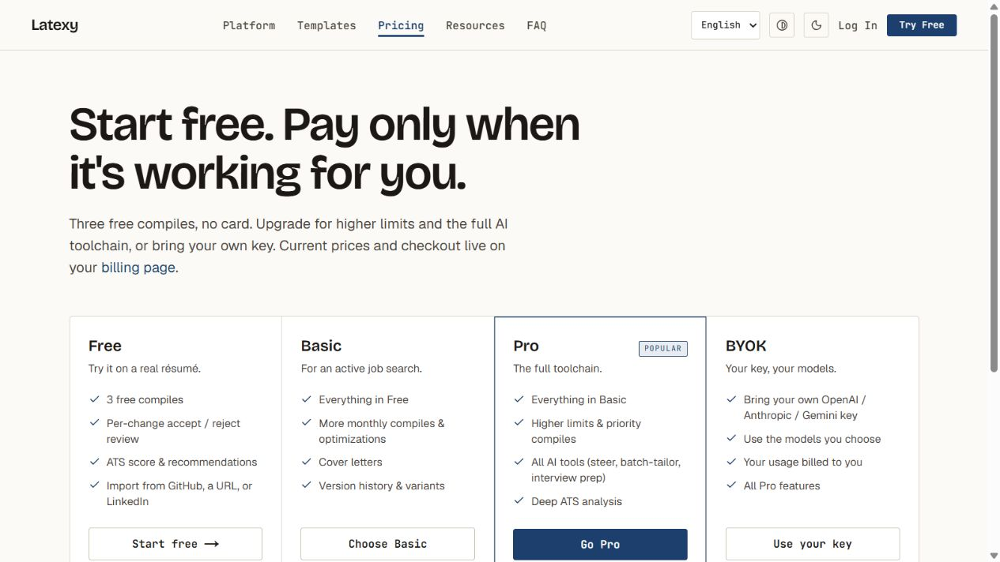
Step 2B · Four tiers, but no monetary amounts.
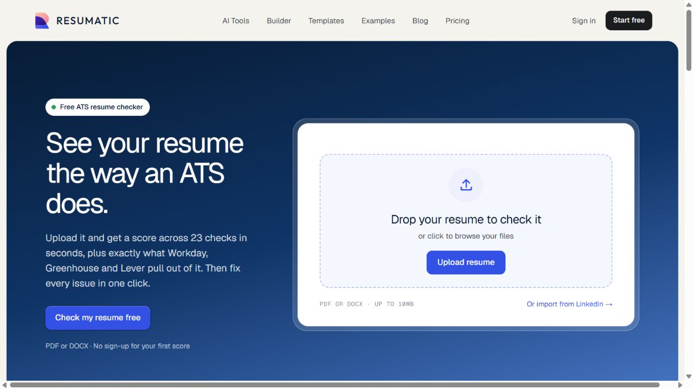
Step 3A · Strong upload affordance and desktop overflow visible at the bottom.
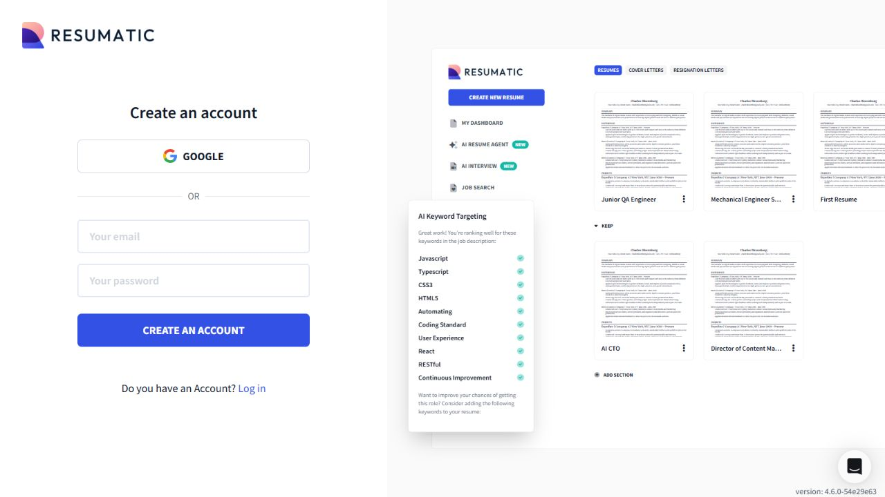
Step 3B · Main checker CTA reaches account creation; no score was obtained through this path.
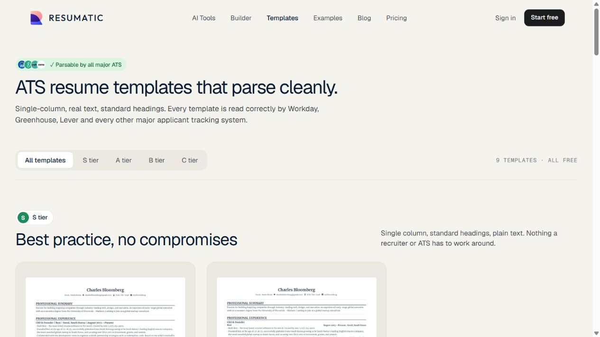
Step 4A · Nine public templates and tier filtering. S-tier filter was exercised successfully.
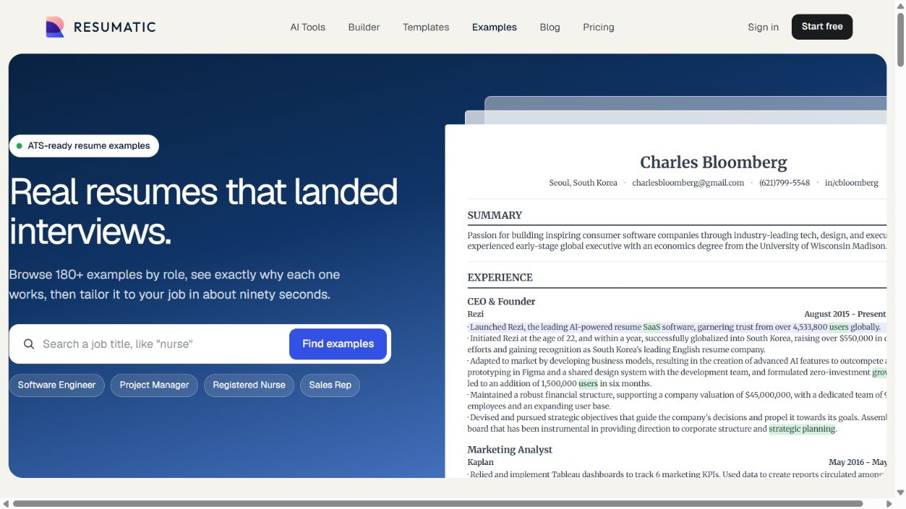
Step 4B · Searchable role examples. Nurse search worked; individual cards point to signup.
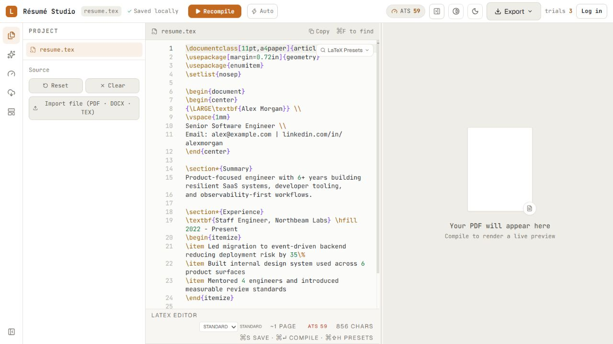
Step 5 · Working guest entry, but raw source and blank preview.
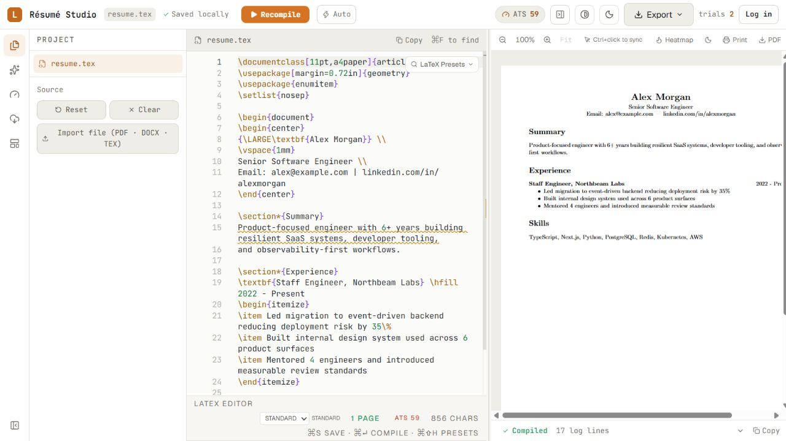
Step 6A · One-page PDF delivered; right edge cropped in the preview pane.
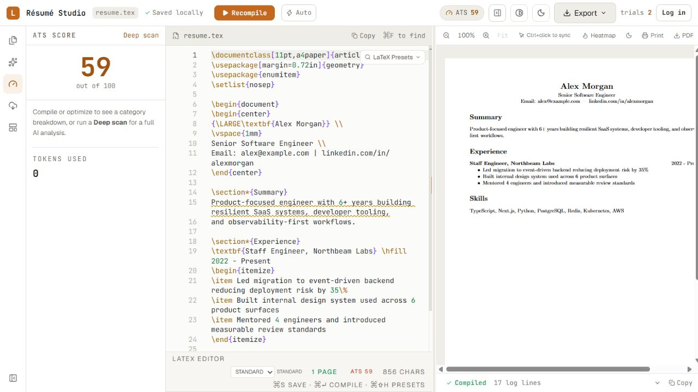
Step 6B · Score 59, with instruction to compile still visible after compile succeeded.
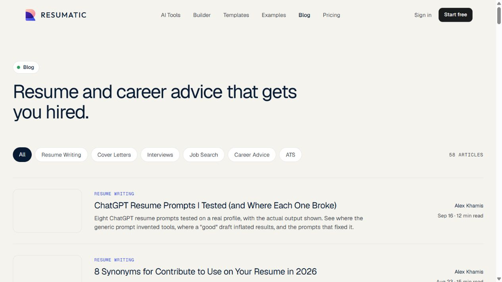
Step 7A · 58 articles displayed, topic categories and author metadata.
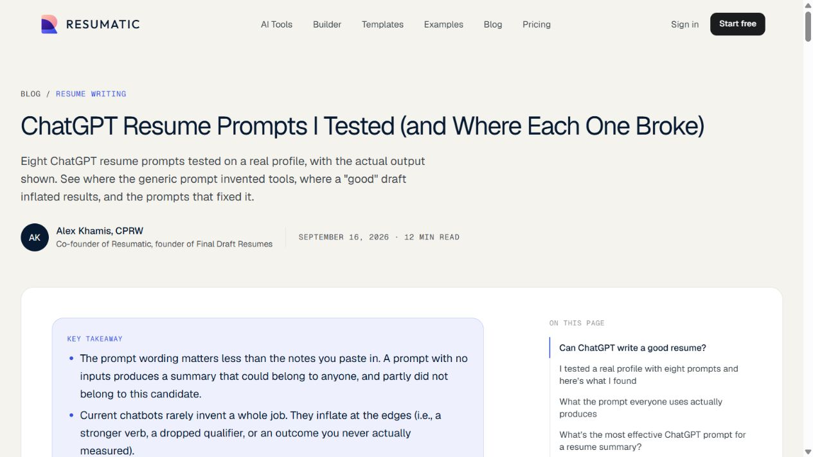
Step 7B · Authored article, reading navigation and clear takeaways. Article JSON-LD observed.
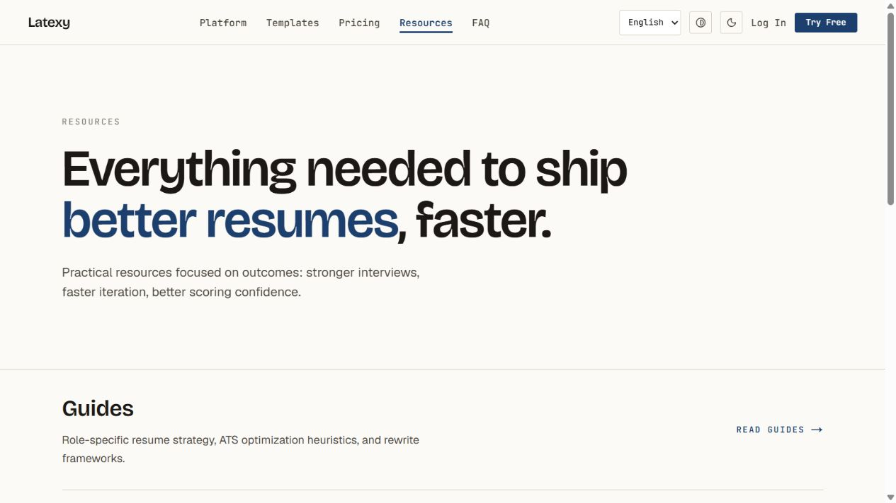
Step 8 · Attractive editorial layout, but destinations are generic FAQ/platform/studio routes.
Evidence and source map
Competitor sources: homepage, pricing, checker, agent, templates, examples, blog, sitemap, and the article and Reddit links above. Public content is summarized, not reproduced.
| Local source | Evidence used |
|---|
frontend/src/app/page.tsx | Static specimen, technical CTA and fixed compile-time claims |
frontend/src/app/layout.tsx, fonts.ts, GlobalHeader.tsx | Metadata, typography, theme, locale and reduced-motion support |
frontend/src/app/pricing/page.tsx, resources/page.tsx, platform/page.tsx | No prices, resource destinations and specialist positioning |
frontend/src/app/try/page.tsx, hooks/useQuickATSScore.ts | Anonymous flow, review gating, score display, ten-second debounce |
backend/app/core/config.py, services/trial_service.py, entitlement_service.py | Default prices, three-use guest trial, daily/monthly quota machinery |
backend/app/services/ats_scoring_service.py, ats_quick_scorer.py, embedding_service.py, ats_simulator_service.py, confidence_score_service.py, benchmarking_service.py | Separate score definitions, weights, modeled parser checks and cohort limits |
frontend/src/components/DocumentAssistantPanel.tsx, InterviewSimulation.tsx; backend/app/api/ai_routes.py, interview_routes.py | Assistant implementation and approval; text-only interview feedback |
backend/app/api/export_routes.py, services/document_export_service.py, scraper_routes.py, application_routes.py, portfolio_routes.py | Export conversion, job URL intake, applications and portfolio features |
frontend/src/app/workspace/builder/, workspace/[resumeId]/edit/page.tsx, tracker/page.tsx; backend/app/services/collab_manager.py | Guided builder, authenticated capability wiring, tracking and collaboration |
backend/app/data/templates/, scripts/seed_templates.py | 61 source templates and their document-type categories |
packages/tui/src/mcp/server.ts, mcp/operations.ts, packages/browser-extension/, LICENSE | Eight MCP tools, API operations, extension source and MIT license |
No implementation fixes, accounts, deployments or external communications were performed. The deliverable is this comparison and captured evidence. Future feature and conversion decisions should use production behavior and measured user outcomes.